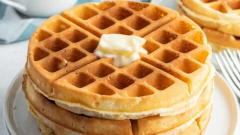

Waffles

This waffle recipe is the only one you'll need to make homemade waffles with your waffle iron. Simple pantry ingredients mix up quickly in this easy batter that can be used right away or stored in the refrigerator for up to a week. Serve waffles hot with whipped cream and fresh fruit or with butter and maple syrup for either breakfast, brunch, or a snack.
Ingredients
- 2 Large Eggs: This waffle recipe starts with two whole eggs, whisked until light and fluffy.
- 2 Cups all-purpose Flour: All-purpose flour adds gluten, which gives the waffles structure. You can also use whole wheat flour.
- 1.75 Cups Milk: Whole milk le
nds richness and moisture. Plus, it helps create the ideal batter consistency.
- 0.5 Cup Vegetable Oil: A neutral oil, such as vegetable oil, ensures the waffles are nice and moist.
- 1 Tablespoon White Sugar: A tablespoon of white sugar adds the perfect amount of sweetness.
- 4 Teaspoons Baking powder: Baking powder acts as a leavener, which means it contributes to the waffles' light and fluffy texture.
- 0.25 TeaspoonSalt: A pinch of salt enhances the other flavors. Don't skip this step!
- 0.5 Teaspoon Vanilla Extract: A dash of vanilla adds complexity and enhances the overfall flavor.
- Nonstick Cooking spray: You'll need to spray the iron with nonstick cooking spray before you start making the waffles.
Steps
- Preheat a waffle iron according to manufacturer's instructions.
- Whisk eggs in a large bowl until light and fluffy. Add flour, milk, and vegetableoil and mix to combine. Whisk in sugar, then mix in baking powder, salt, and vanilla just until smooth, being careful not to overmix.
- Spray the preheated waffle iron with nonstick spray. Pour batter onto the hot waffle iron and cook until golden brown and the iron stops steaming, 3 to 5 minutes.